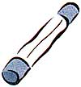
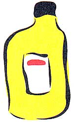
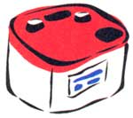

Mother's Mechanic
Mary Jacksnon examines some of a mechanic's most frequently asked questions.. By Mary Jackson
Q: What should I do if the alternator light comes on?
A: An activated alternator or battery light means more electricity is being used than is being replaced. The good news is it's probably not fatal-just massively inconvenient. The rule is to keep driving until you reach a service station. Turn off as many electricity-draining accessories as you safely can. The hardest thing the electrical system has to do is start the car, so don't turn the engine off unless it's absolutely necessary.
Warning! If the temperature light comes on at the same time the alternator light is on (or simply by itself), stop the car as soon as you can. The same belt that drives the alternator often drives the water pump. If the water pump stops working, it won't be long before the engine overheats and its internal parts melt. The result will be major damage and expensive repairs.
Q: What is vapor lock?
A: The additives in today's gasoline have raised its volatility, which is the ability to change from a liquid to a vapor. During hot weather, gasoline may actually boil, causing it to stop flowing. The result is vapor lock; the engine is deprived of fuel and lets you know with symptoms such as rough running, loss of power, and in some instances, stalling.
Modern electric fuel pumps located far from the heat of the engine provide more constant pressure to the system and have alleviated the problem in most cars. But if yours isn't one of those, and vapor lock is a problem, try switching from your regular brand of gasoline to another reputable brand. If that doesn't work, it's possible that the fuel lines can be rerouted so they are farther removed from the hot spots of the engine.
Whenever there is a problem anywhere in your car's electrical system, check first to see if there is a fuse for that accessory. If there is, examine it to see whether it is blown (the fuse's metal strip is broken or blackened) before you send for help. It is an all-toocommon occurrence today for cars to be towed into dealerships and service stations when the problem could have been remedied with an inexpensive fuse. Don't waste your time and money.
Have your timing belt or chain inspected and changed whenever your manufacturer recommends it. If a timing belt breaks, it can act like a grenade inside an engine. In seconds it can severely damage valves and even pistons, resulting in expensive repairs to remedy the damage.
The information printed on the oil container refers to the viscosity and grade of the oil. The letters API and SAE assure you that the oil meets the warranty standards set by the American Petroleum Institute and the Society of Automotive Engineers. Numbers such as 10W-30 refer to viscosity, the oil's ability to flow at different temperatures. The ability is measured on a scale from 5 through 50. The smaller the number, the thinner the oil. W means that the oil is suitable for use in the winter. Letters such as SF refer to the oil's quality. S means the oil is suitable for gasoline engines. C means it is suitable for diesel engines. Oil for high-power engines is indicated by a higher letter-SH has better antiwear additives than SG, for example. Energy Conserving means just that: this oil can help improve fuel economy.
|
ILLUSTRATIONS: KEN LIN |
 |
 |
|
|
 |
|